Example: Query Windows Processes
Setup of Royal Server
Royal Server needs to be running, make note of the Primary Server Binding (the IP and Port Royal Server is using), we will use this later on.
Setup of Royal TS
In order to use Royal Server from Royal TS/X, first you need to createa a new document.
Note
The steps outlined here are very similar to our Royal TSX product for macOS.
If you have not done yet, create a new document.
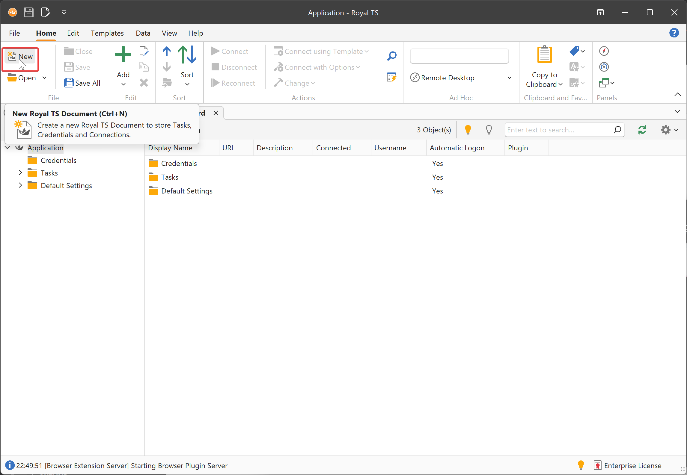
Note
The application document is a special kind of document, stores important application settings (Options) and also features some out-of-the-box command tasks. You cannot add connections directly to the application document. Create your own document(s) to store connections.
Specify a name and save the document.
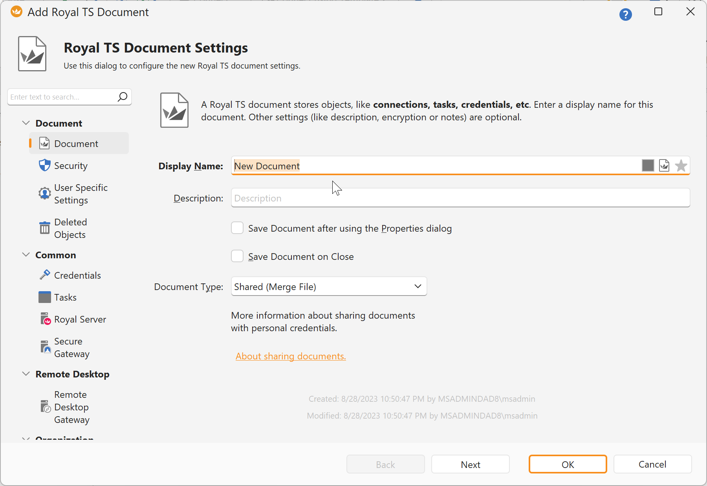
Then, click Add and Royal Server
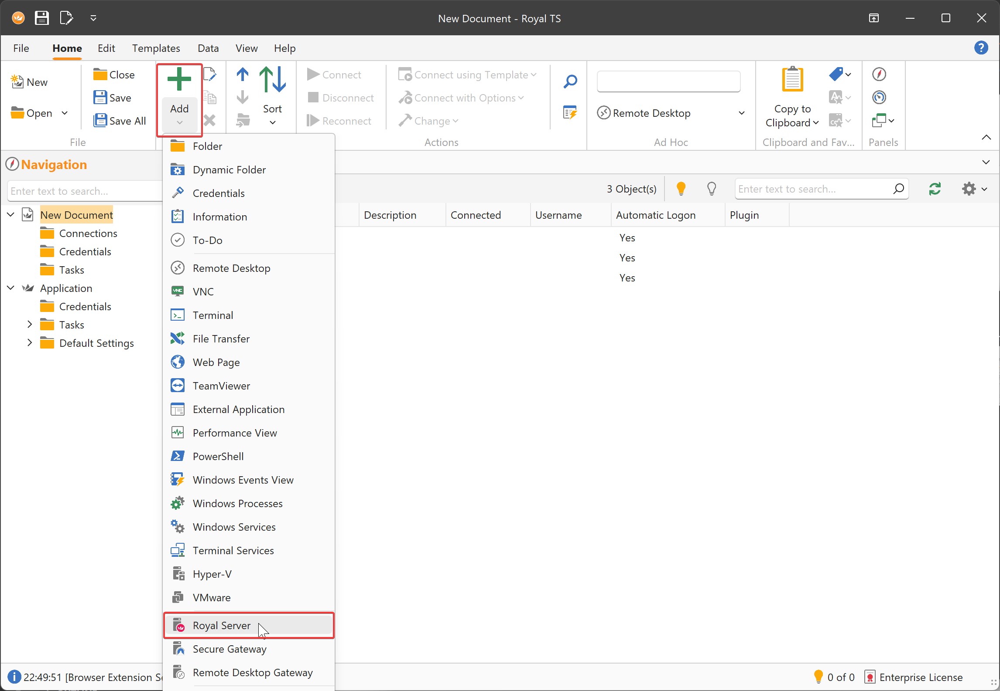
Specify a Name and a Computer Name (which is the DNS name or IP of Royal Server)
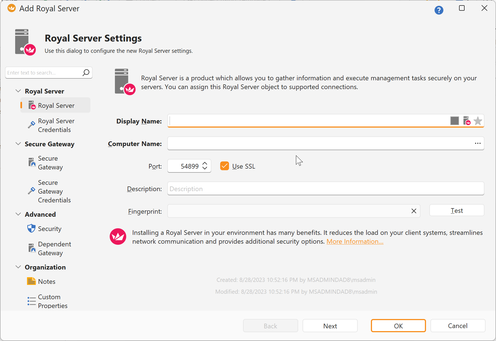
Using credentials for Royal Server Royal Server offers three components.
- The Management Endpoint (used for managing servers by e.g. viewing Windows Events or listing Windows Processes) is based on HTTPs.
- The Document Store is used for working with Documents hosted by Royal Server and based on HTTPs.
- The Secure Gatway is an SSH tunnel and can be used for connection types like Remote Desktop Connections or Terminal Connections.
The Royal Server object supports both HTTPs (specify "Royal Server Credentials") and SSH tunnel access (specify "Secure Gateway Credentials") of Royal Server.
For this tutorial, we need to specify Royal Server Credentials:
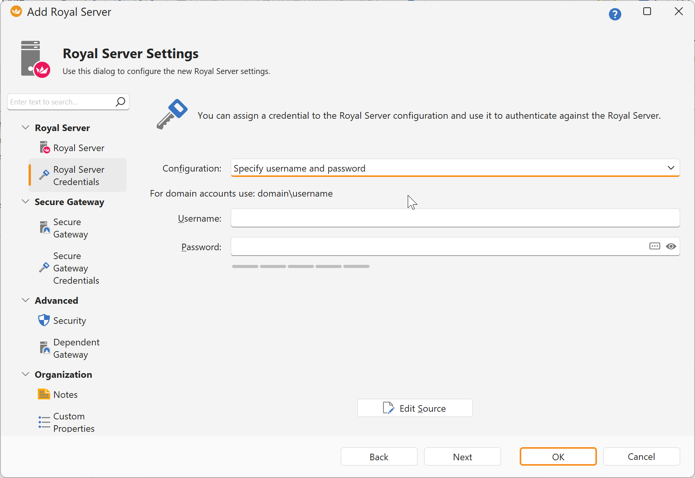
These credentials are used to authenticate against Royal Server and the account needs to be a member of the "Royal Server Users" group to get access.
Now we have a way to use Royal Server for managing Windows Processes. Next, we create a Windows Processes connection:
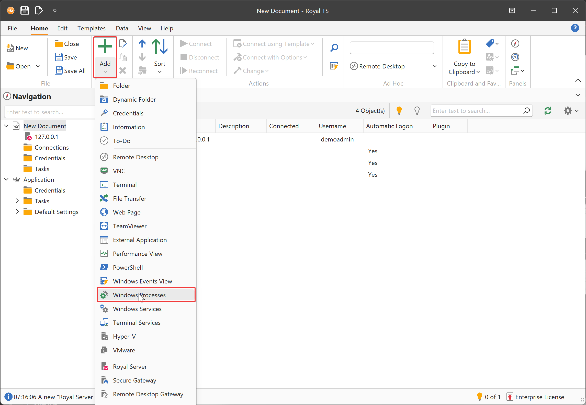
Specify a Display Name and a Computer Name (which is the DNS name or IP of the server you want to manage the processes):
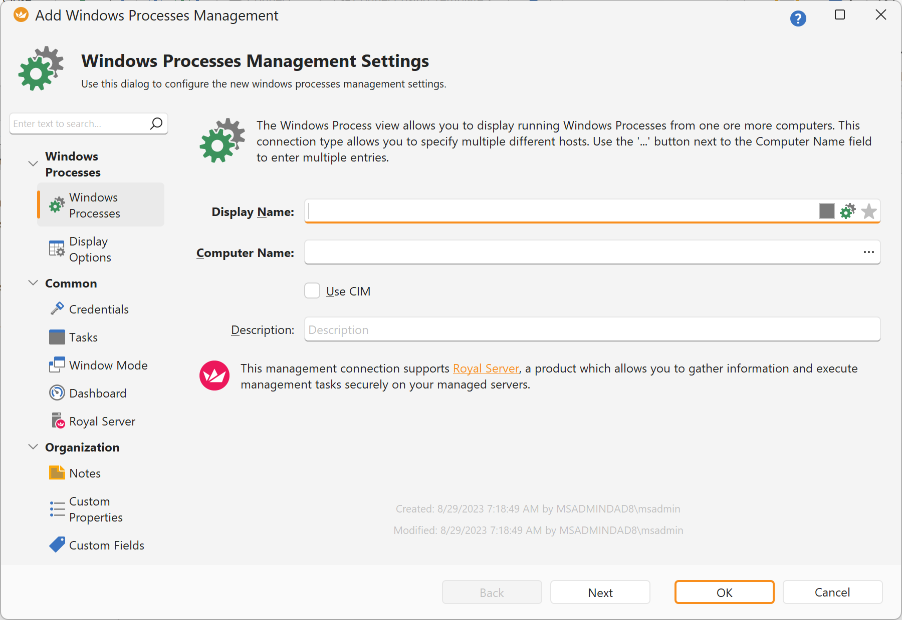
Specify a credential that can be used to connect and manage Windows Processes. These credentials are used to authenticate against the managed server (the one where we want to list the processes).
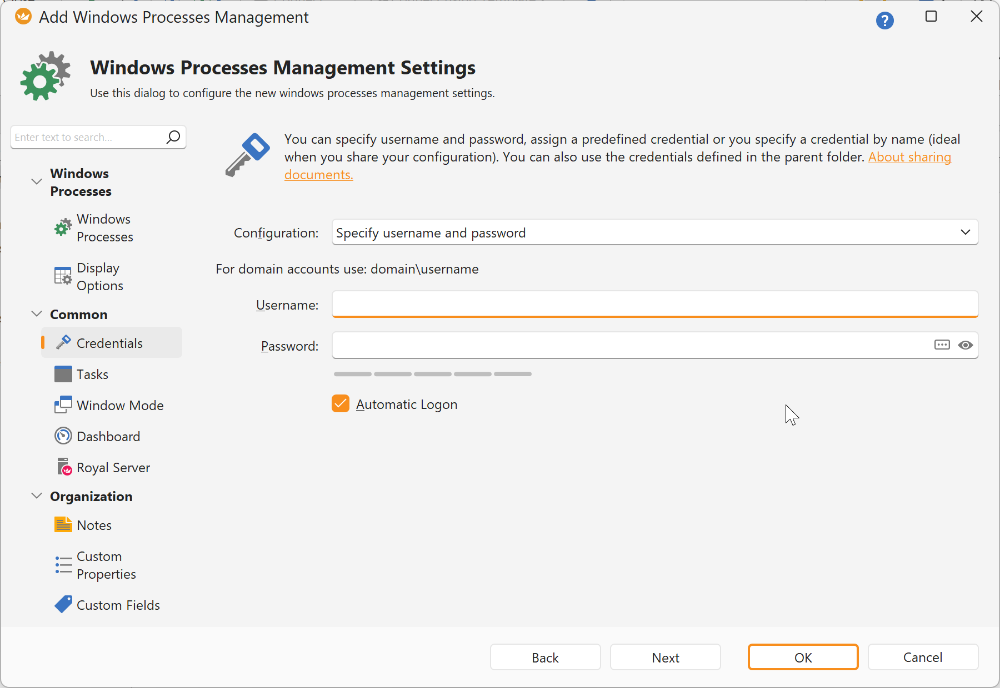
Note
You don't need to specify passwords directly. There are more flexible ways to specify a credential.
Next, specify the Royal Server that should be used for this Windows Processes connection:
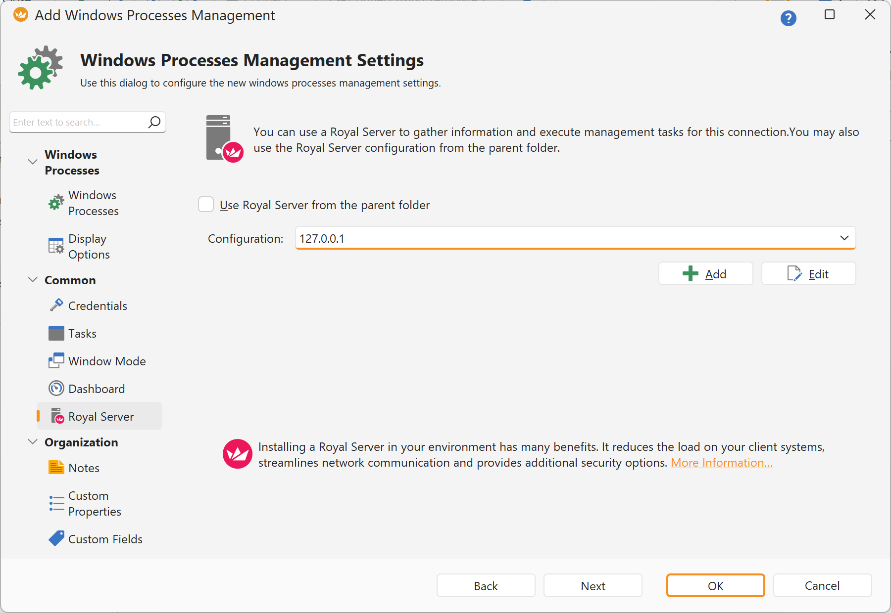
Note
If you do not specify a credential, Royal TS is trying to query the processes directly without Royal Server. Depending on your network configuration this might not work, e.g. when the managed server has an internal IP which is not accessible from Royal TS.
Right-click on the Windows Processes connection and click Connect.
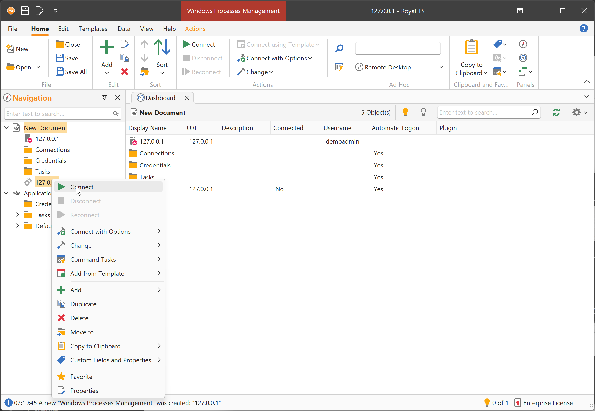
Note
When connecting for the first time, Royal TS is asking to validate thumbprint of the certificate. This helps to prevent man-in-the-middle attacks. man-in-the-middle attacks. 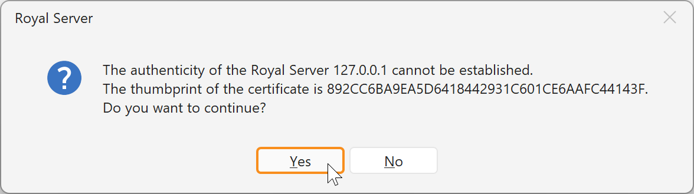 The correct thumbprint is shown under in the Royal Server Configuration Tool under Royal Server -> Service Configuration -> Primary Server Binding - Certificate.
When connecting, the following steps are executed:
- Royal TS connects via HTTPs to Royal Server and presentw the configured Royal Server credential
- Royal Server checks the username and password and if the specified User is in the "Royal Server Users" group
- Royal Server then executes the requested module (in this case the Windows Processes) and passes the host name and credential to it.
- The Windows Processes module queries the processes remotely and returns the data to Royal Server
- Royal Server returns the module data to Royal TS
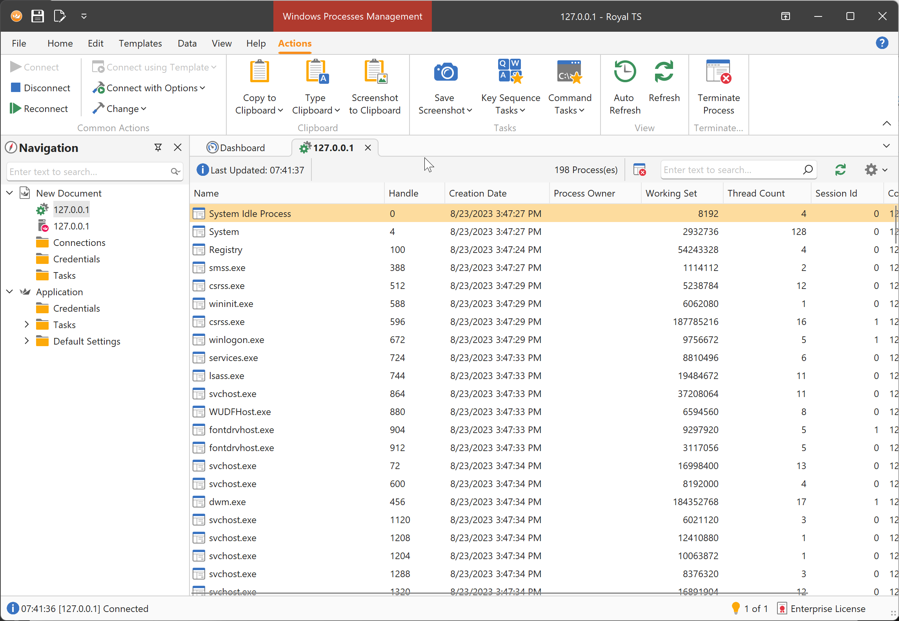